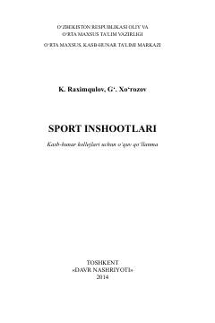

SISport inshootlarini qurish, turlari va ulardan foydalanish qoidalariga bag‘ishlangan o‘quv qo‘llanma.
Mazkur o‘quv qo‘llanma kasb-hunar kollejlari o‘quvchilari uchun mo‘ljallangan bo‘lib, sport inshootlari, ularning turlari, tarixi, shuningdek, ularni qurish va foydalanishga qo‘yiladigan talablar haqida nazariy va amaliy bilimlar beradi. Qo‘llanmada jismoniy madaniyat va sportni rivojlantirish, sog‘lom turmush tarzini targ‘ib qilishda sport inshootlarining tutgan o‘rni yoritilgan.